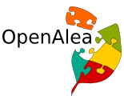
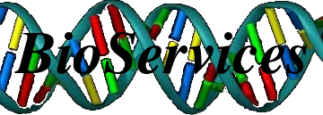

What I did
I studied Physics at the Université du Littoral, France (1994-1998) and Astronomy at the Université de Nice-Sophia-Antipolis, France (1998-1999). I did my PhD at the Observatoire de Nice-Côte d'Azur (1999-2003) within the VIRGO project searching for coalescing black holes binaries...
Then, I moved to Wales, U.K., to work at the Physics and Astronomy Department of Cardiff University as a Research Associate (2003-2008). I was involved in the Data Analysis Group of LIGO, an American project in astronomy.
 In 2008, I moved to Montpellier, France to work in Plant Science at the French National Institute of Computer Science, INRIA and Agricultural Research for Development, CIRAD. In particular, I worked on OpenAlea , an open source project that provides a Visual Programming Environment.
Everyday lab life: mixing Python/C/C++/HTML/Javascript to solve scientific problems that involve data analysis and high-performance computing.
Since August 2011, I am a Staff Research Scientist at EMBL-EBI. I develop software such as BioServices,  and CellNOptR and many more to provide tools to study protein interactions within human cells.
What do I do ?
By nature I'm curious, and so I love learning new technologies and approaches to solving problems. Over the past decade I've been exposed to a lot of languages, to the point where learning a new one tends not to be of an issue. Although Python is my favourite language as you surely have already noticed from the software Section, most days I would use one of the a few core technologies such as Python, C/C++, HTML/CSS, JavaScript, R or Matlab. Coming back to Python, I use it with a bunch of scientific libraries (numpy, scipy, networkx, matlplolib, pandas) to manipulate data structures (networks, 1D, 2D) and solve scientific problems.
You need More information ?
Drop me an email if you like (moc.liamg@realekoc).